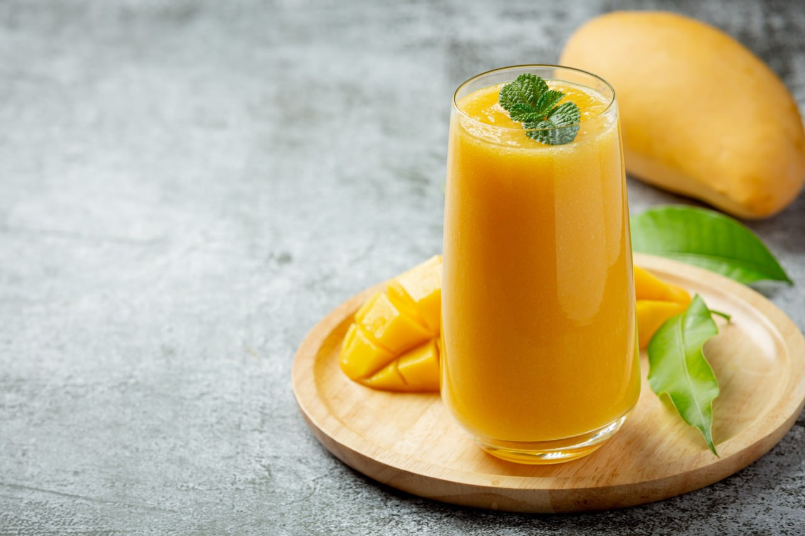

Free Recipes
-

Butter Chicken
A savory chicken dish cooked in a creamy tomato sauce.
-

Samosas
Crispy pastry filled with spiced vegetables or meat.
-

Mango Lassi
A sweet, refreshing yogurt drink with fresh mango.
-

Egg Hoppers
Bowl-shaped pancakes with a whole egg in the center, often served with sambol.
-

Masala wada
Deep-fried lentil fritters with spices and herbs.
-

Watalappam
A spiced coconut custard pudding, often served during festive occasions.
About Us
Mr.Devon is a family-owned restaurant that has been serving authentic Sri Lankan cuisine for over 20 years. Our dishes are made from the freshest ingredients and are cooked to perfection using traditional methods. Come experience the flavors of Sri Lanka at Mr.Devon!